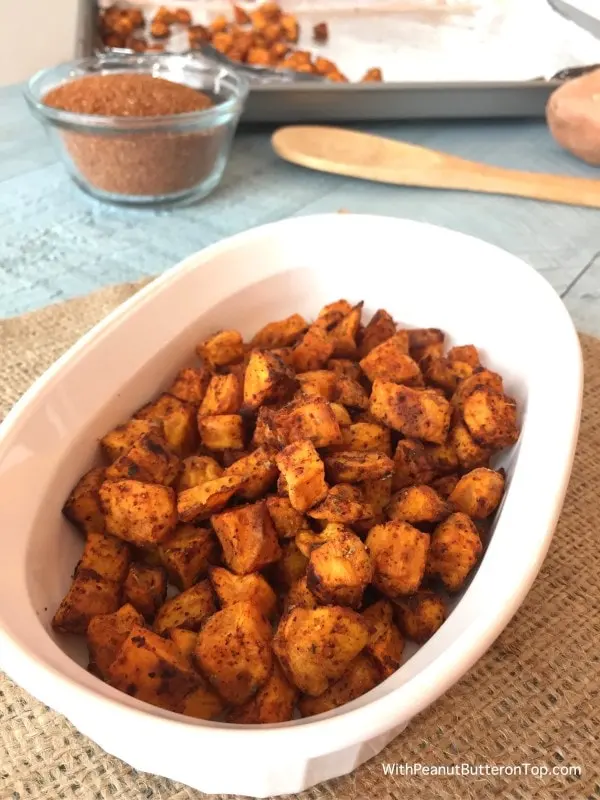

Curry Sweet Potatoes

This is a recipe for my famous roasted curry sweet potatoes! These are a year-round staple in my house.
Ingredients
- 4-6 sweet potatoes
- 1/4 cup of Coconunt Oil
- Curry powder of choice
- Pepper
- Cinnamon
- Salt
Steps
- Preheat oven to 425 F.
- Cut sweet potatoes in 1 inch cubes.
- Toss the sweet potatoes in a bowl with the coconut oil.
- Once coated in oil, add the curry powder, pepper, cinnamon, and salt.
- Place sweet potatoes on a baking sheet and place in the oven for 15 minutes.
- Remove sweet potatoes and mix up on the baking sheet. Place back in oven for 10 minutes.
- Remove from oven and let cool.